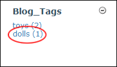

Viewing Blog Entries by Tags
How to view all of the blog entries that have been associated with a tag.
- Go to the Blog_Tag module. This module displays a list of all of the existing tags with the number of each blog entry associated with each tag.
- Click on a linked [Tag Name]. This displays associated blog entries results are displayed in the View_Blog module.

Viewing Blog Entries by Tags